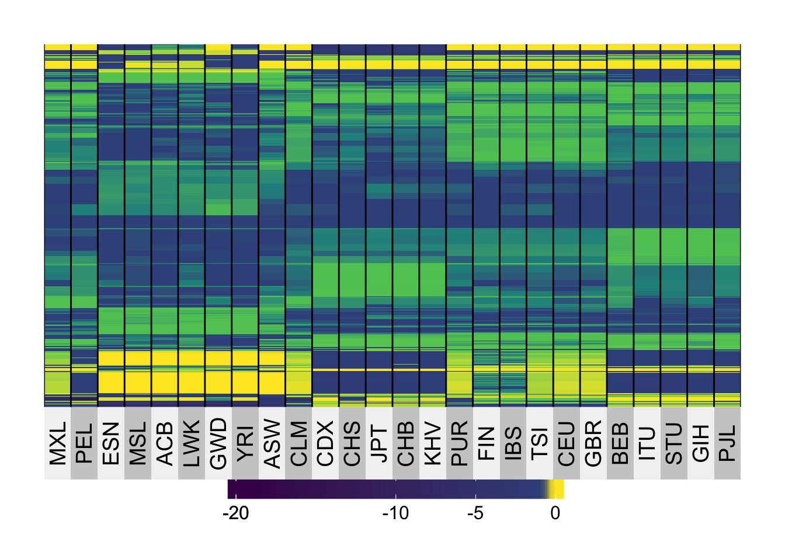

Binomial logistic flash
Wei Wang
2017-04-20
Last updated: 2017-05-01
Code version: eabdf3e
ignore this part, this is code I used.
Y_mat = readRDS("../data/popgen/All_chr22_8000/ALL.chr22.phase3_shapeit2_mvncall_integrated.20130502.sample8000.n.rds")
N_mat = readRDS("../data/popgen/All_chr22_8000/ALL.chr22.phase3_shapeit2_mvncall_integrated.20130502.sample8000.n1.rds")
Y = Y_mat - (N_mat)/2
Y = as.matrix(Y)
NB = as.matrix(N_mat)g = readRDS("../data/popgen/All_chr22_8000/output_K20.rds")library(reshape2)
melted_cormat_1 <- melt(g$l %*% t(g$f), na.rm = TRUE)
library(ggplot2)Warning: package 'ggplot2' was built under R version 3.3.2p1 = ggplot(data = melted_cormat_1, aes(Var2, Var1, fill = value))+
geom_tile(color = "white")+
scale_fill_gradient2(low = "blue", high = "yellow", mid = "green",
midpoint = 0, limit = c(-2,2), space = "Lab") + labs(title = "truth", y = "sample", x = "variable") +
theme_minimal() + theme(legend.position="none",plot.background = element_rect()) plot_factor = function(f,P,k,f_lables = NA,y_lab = "loading values"){
library(ggplot2)
if(any(is.na(f_lables))){
f_dat <- data.frame(variable = 1:P, Factor = f,
sign.f = factor(sign(f)),
hjust = factor(sign(f)))
plot_f = ggplot(f_dat,aes(x = variable,y = Factor,fill = sign.f )) +
geom_bar(stat = "identity",width = 0.5) +
scale_fill_manual(values = c("blue","red")) +
theme_minimal() +
labs(title = paste("factor",k,"with PVE=",round(pve,3)), y = y_lab )
}else{
f_dat <- data.frame(variable = 1:P, Factor = f,
sign.f = factor(sign(f)),
variablenames = f_lables,
hjust = factor(sign(f)))
# 120% lim
range_f = max(f) - min(f)
upper_f = max(f,0) + 0.15 * range_f
lower_f = min(f,0) - 0.15 * range_f
plot_f = ggplot(f_dat,aes(x = variable,y = Factor,label = variablenames,fill = sign.f)) +
geom_bar(stat = "identity",width = 0.5) +
geom_text(size = 2.75,angle = 90,hjust = as.character(f_dat$hjust),
nudge_y = sign(f_dat$Factor) * 0.2 * mean(abs(f_dat$Factor)) ) +
scale_fill_manual(values = c("blue","red")) +
ylim(lower_f,upper_f) +
theme_minimal() +
labs(title = paste("factor",k), y = y_lab)
}
return(plot_f)
}pic = list()
for(i in 1:14){
pic[[i]] = plot_factor(g$f[,i],P = 26,k = i,f_lables = colnames(Y),y_lab = "loading values")
}Plot of loadings
psuedo PVE
I use \(||l_i f_i^T||_F^2\) as psuedo PVE
pve = sapply(seq(1,14),function(x)(sum((g$l[,x] %*% t(g$f[,x]))^2)))
par(mfrow = c(2,2))
plot(pve, main = "PVE")
plot(seq(2,14), pve[2:14],main = "PVE[2:14]")
plot(log(pve), main = "log PVE")Base on the psuedo PVE I would suggest K = 5 or K = 7
Factor Plot
Here I provide all the 14 factor loading I get.
pic[[1]]Warning: Removed 9 rows containing missing values (geom_text).pic[[2]]pic[[3]]pic[[4]]pic[[5]]
pic[[6]]pic[[7]]pic[[8]]pic[[9]]pic[[10]]pic[[11]]pic[[12]]
pic[[13]]pic[[14]]Heatmap for \(LF^T\)
heatmap( g$l %*% t(g$f),labCol = colnames(Y_mat))heatmap( g$l[,2:14] %*% t(g$f[,2:14]),labCol = colnames(Y_mat))use \(-log_{10}\) for the structure
library(boot)
log_10_G = log10(inv.logit(g$l %*% t(g$f)))
log_10_G_2 = log10(inv.logit(g$l[,2:14] %*% t(g$f[,2:14])))
colnames(log_10_G) = colnames(Y)
colnames(log_10_G_2) = colnames(Y)
superheat::superheat(log_10_G_2,pretty.order.rows = T,pretty.order.cols = T,bottom.label.text.angle = 90)
superheat::superheat(log_10_G,pretty.order.rows = T,pretty.order.cols = T,bottom.label.text.angle = 90)Session information
sessionInfo()R version 3.3.0 (2016-05-03)
Platform: x86_64-apple-darwin13.4.0 (64-bit)
Running under: OS X 10.12.4 (unknown)
locale:
[1] en_US.UTF-8/en_US.UTF-8/en_US.UTF-8/C/en_US.UTF-8/en_US.UTF-8
attached base packages:
[1] stats graphics grDevices utils datasets methods base
other attached packages:
[1] ggplot2_2.2.1 reshape2_1.4.2 workflowr_0.4.0 rmarkdown_1.3
[5] boot_1.3-18
loaded via a namespace (and not attached):
[1] Rcpp_0.12.10 knitr_1.15.1 magrittr_1.5 superheat_0.1.0
[5] munsell_0.4.3 colorspace_1.3-2 R6_2.2.0 stringr_1.2.0
[9] plyr_1.8.4 dplyr_0.5.0 tools_3.3.0 grid_3.3.0
[13] gtable_0.2.0 DBI_0.5-1 git2r_0.18.0 htmltools_0.3.5
[17] yaml_2.1.14 lazyeval_0.2.0 rprojroot_1.2 digest_0.6.12
[21] assertthat_0.2.0 tibble_1.2 evaluate_0.10 labeling_0.3
[25] stringi_1.1.2 scales_0.4.1 backports_1.0.5 This R Markdown site was created with workflowr